| 日付 | 2010年6月5日（土） |
|---|---|
| 山域 | 丹沢 |
| メンバー | 単独 |
| 山行形態 | 日帰り |
| アクセス | 電車、バス |
| ルート (Map) | 大倉→戸沢山荘→源次郎沢→花立→塔ノ岳→二ノ塔→菩提原 |
天気のあまりよくない休日。あまり遠出をしたくなかったため、
丹沢の沢に行って見ることにする。
沢登りはこれまでやったことがないので、
入門向けと言われる源次郎沢を選ぶことにする。
7:04 大倉バス停到着。標高285m。
始発のバスだというのに満員だった。ほとんどの人はここから大倉尾根を登る。
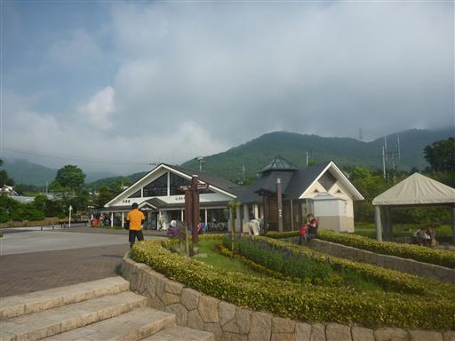
源次郎沢の入口までは1時間30分ほど車道を歩かなければならない。
昔、書策新道を下ったときに逆向きに歩いた道だ。
舗装されていない道だが、ハイカーなのかキャンパーなのか、次々と車に追い抜かれる。
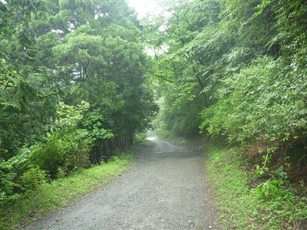
竜神の泉。名水百選に選ばれている。
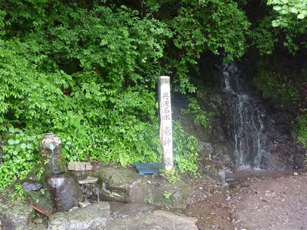
フタリシズカ。ヒトリシズカと同属だが、花の形はずいぶん違う。
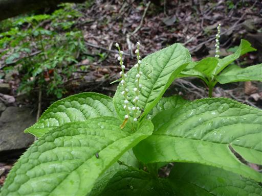
書策新道入口付近から源次郎沢に入渓する。
書策新道は登山道に損傷があったのか封鎖されている。
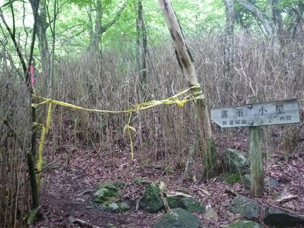
無事、源次郎沢に入る。普通の登山靴で来ているので、水を避けながら登っていく。
これでは沢登りの醍醐味を味わえないが、水に入るには沢用のシューズが必要だ。
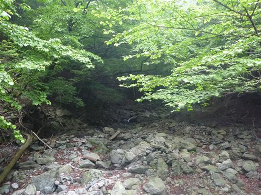
最初の滝が現れる。滝の左側の岩を登っていく。
それほど難易度は高くない。
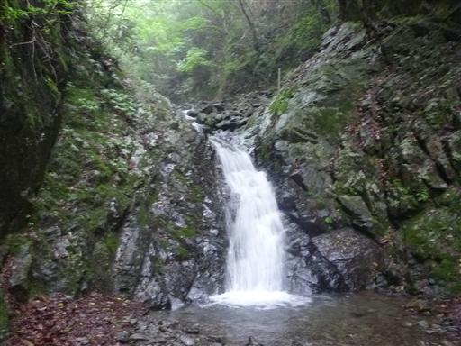
滝の側には緊急連絡先の標識がある。
沢登りはバリエーションルートのはずだが、至れり尽せりだ。
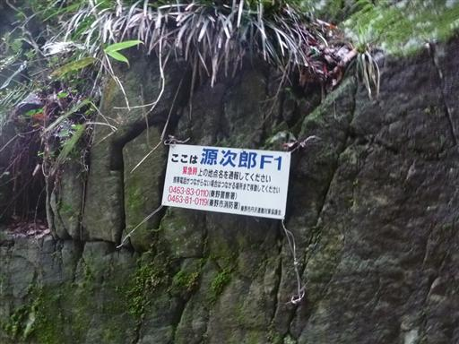
岩がごろごろと転がる沢を登っていく。
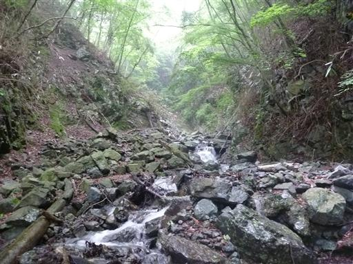
次の滝は右側から簡単に登ることができる。この辺りは楽勝だ。

ここまでは楽勝で来たが、この滝は難易度が高い。
沢シューズではないので濡れた岩はとにかくよく滑る。
仕方が無いので巻道を選ぶ。巻道も急坂の藪で辛い。
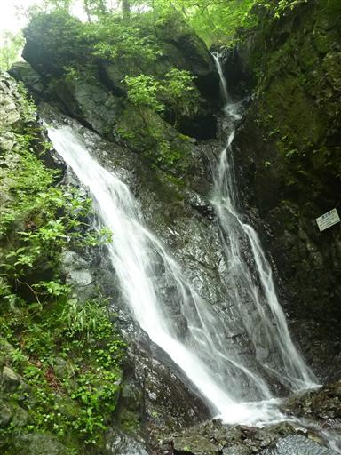
次の滝も登れそうで、怖くて次の一歩が出ない。
確保があれば登れるのだが、1人だと無茶もできない。
途中まで登ってみたが無理で、降りるのも困難になってしまった。
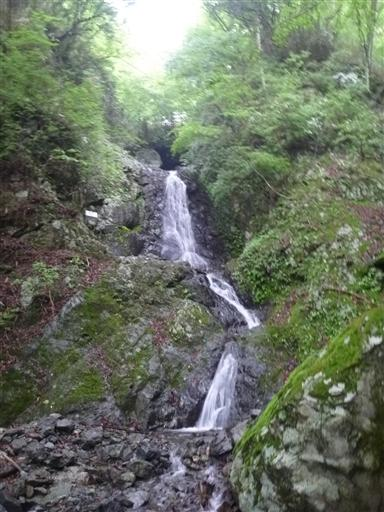
再び巻き道で滝を突破し、だいぶ沢の上流に出てくる。
もう水はチョロチョロとしか流れていない。
途中2度ほどヤマビルに襲われる。この季節の丹沢の沢を歩いているので覚悟はしていたが…
どちらも靴にへばりついているところを発見し、もってきた塩で撃退した。
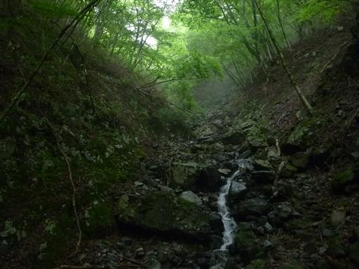
滝の上部に巨大な石がひっかかっている。ここは右側から超えていく。
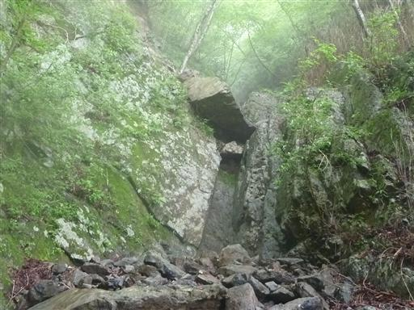
シカの死体。丹沢はシカの数が多いが、登山道で死体など見たことが無い。
このルートでは2つほど死体を見かけたので、登山道以外ではこういうものなのかもしれない。
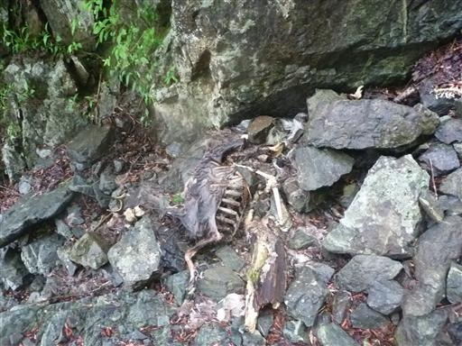
こちらの滝にも上部に巨大な岩が乗っかっている。
ここも突破は難しく、左から大きく巻く。
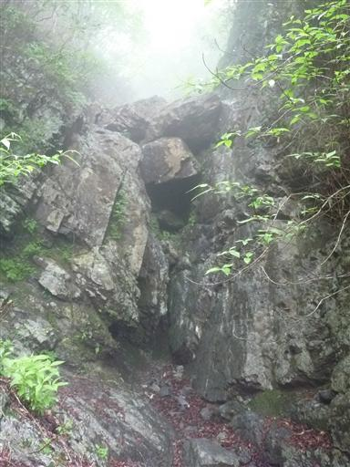
源次郎沢の源頭部に出てくる。だいぶ平和な風景が広がってきた。
ルートさえ気を付けていれば、もう危険箇所はなさそうだ。
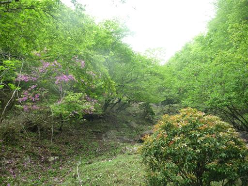
ガイドブックに記述されている通り、赤っぽい岩が連なる場所に出てくる。
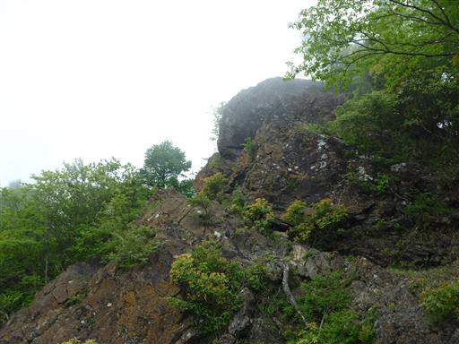
この辺りはもう雲に覆われて展望は全く無しだ。
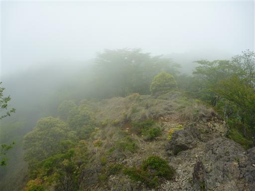
こちらは生きているシカ。丹沢のシカは人間を見かけても逃げない。
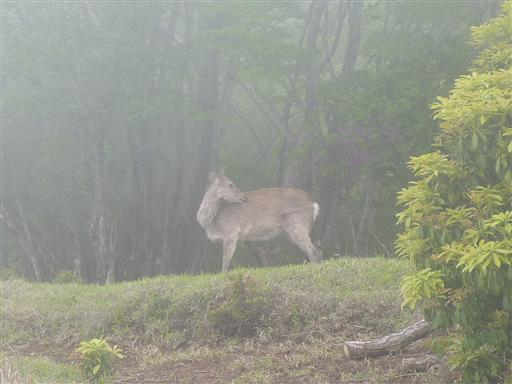
沢を詰めた場所から歩くこと3分で大倉尾根の正規登山道に出てくる。
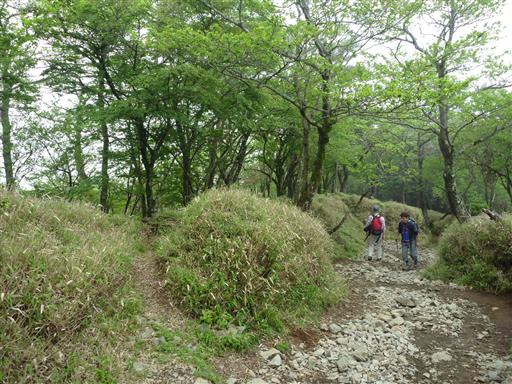
ここから大倉尾根を下山してもいいのだが、
せっかくなので後もう少しの塔ノ岳まで行くことにする。
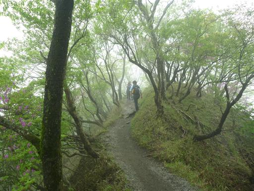
ちょうどミツバツツジが満開の季節だ。
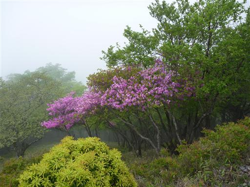
11:12 塔ノ岳山頂到着。標高1491m。
これでここに来るのは7回目…か？
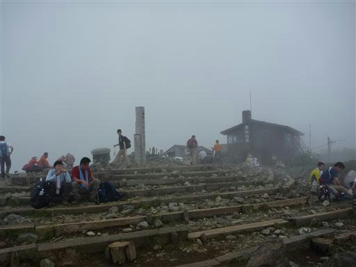
西の方角だけ少し雲が切れてわずかな展望がある。

ここで昼食をとっていて下を見ると、登山者が落としたご飯粒をアリさんが頑張って運んでいる。
ご飯粒一粒といっても小さなアリにとってはご馳走だ。
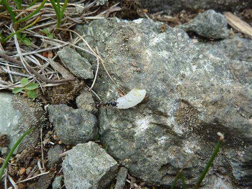
大倉尾根はつまらないので、またまた丹沢表尾根から伸びる適当なルートを下山することにする。
以前、三ノ塔尾根と書策新道を歩いているので、今回は二ノ塔尾根を下る。

二ノ塔尾根の中腹で怪しげな標識を発見。
少々不便な道でも新しい道を歩くとこういった新たな発見があるから面白い。
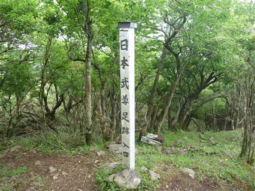
登山道から分岐する道を歩くこと5分、それらしきものに到着。
確かに足跡に見えなくも無い。
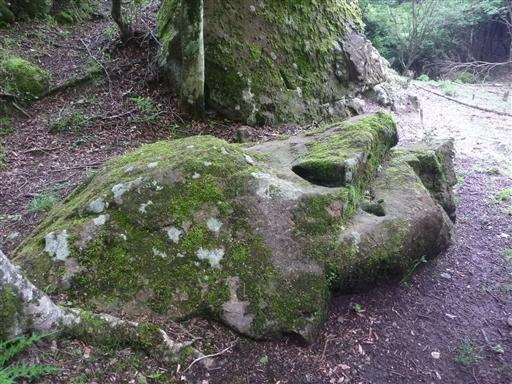
再び登山道に戻ってくる。しばらく歩くと展望が広がる場所に出てくる。
ベンチなども用意されているのだが、二ノ塔尾根を歩くハイカーなどほとんどいない。
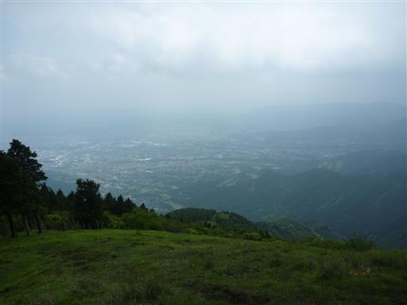
下山して車道に出てくる。
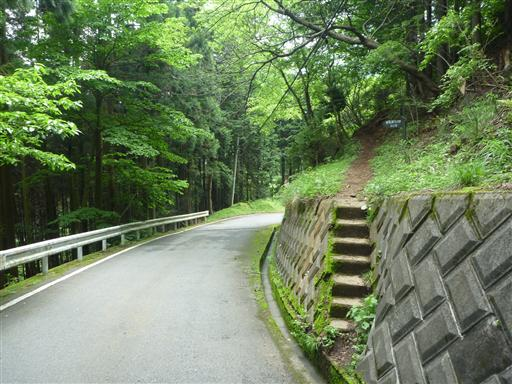
葛葉川を横切る。沢登りは少々懲りたが、この葛葉川も入門者用の簡単な沢として有名だ。
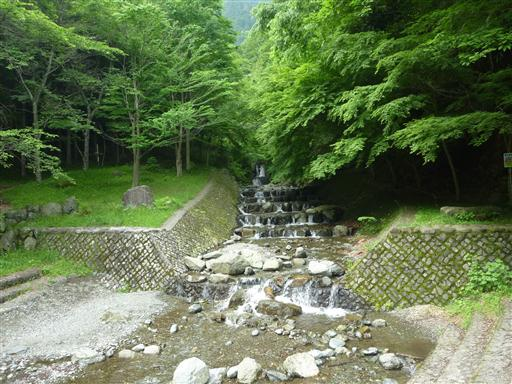
車道脇に無人の野菜売り場がある。明日はバーベキューに行く予定で
キャベツ担当なので、100円で一つ買っていく。
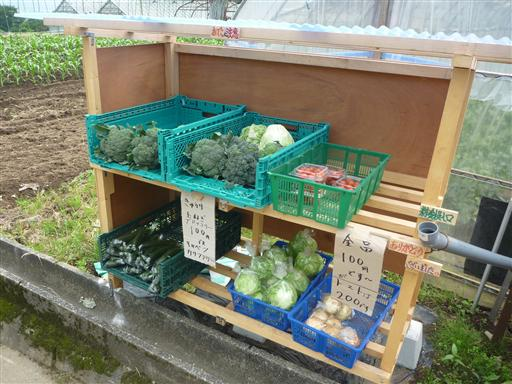
14:21 菩提原バス停到着。標高190m。
簡単な岩山、雪山はこれまで専用の道具を持たずに試みていたが、沢は思った以上に難しかった。
どんなに簡単な沢でも、それ相応の装備は必要そうだ。
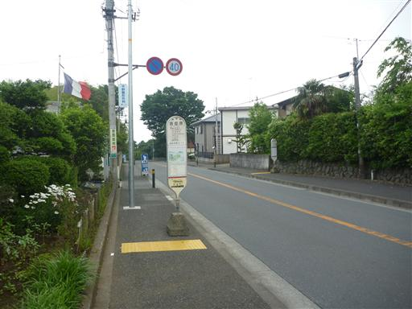